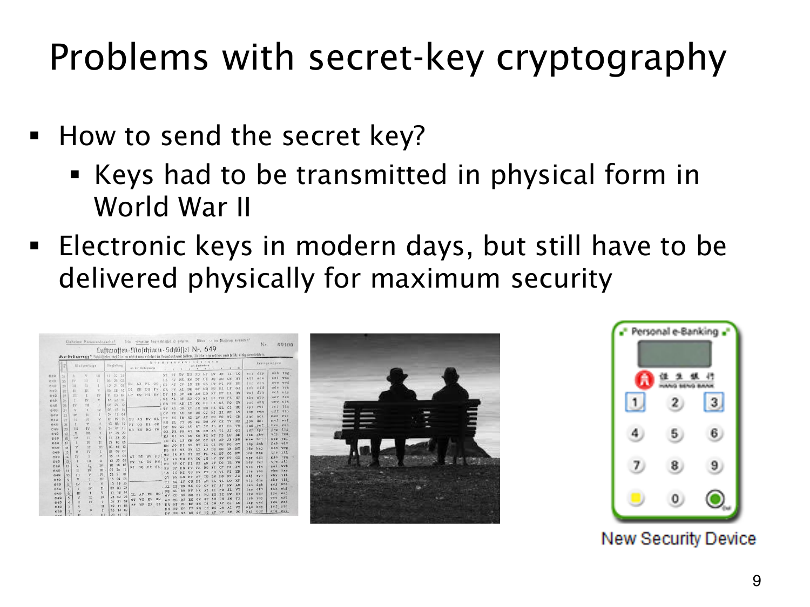

L1.14 · 第 9 页讲解原文
查看这一页课件

密钥本身也需要安全送达
若密钥与密文经过同一条可窃听的渠道，窃听者便可能同时拿到解密所需的秘密。共享密钥系统因此还要解决密钥的产生、传递和保管，不能只研究加解密的算式。
课件以二战的实体密钥分发为背景，图中有历史密钥表、面对面交接和电子安全装置。电子密钥仍是一串信息，换用电子装置不会自动消除分发问题。
“必须实体递送才安全”也不能当作一般数学定理。实体传递有自身风险，密码协议则可在特定假设和认证机制下建立共同秘密。这页意在说明传统分发的负担。
接下来的目标是只交换公开可见的信息，双方却能算出第三方难以算出的共同秘密，模运算和计算难题将用于构造这样的过程。